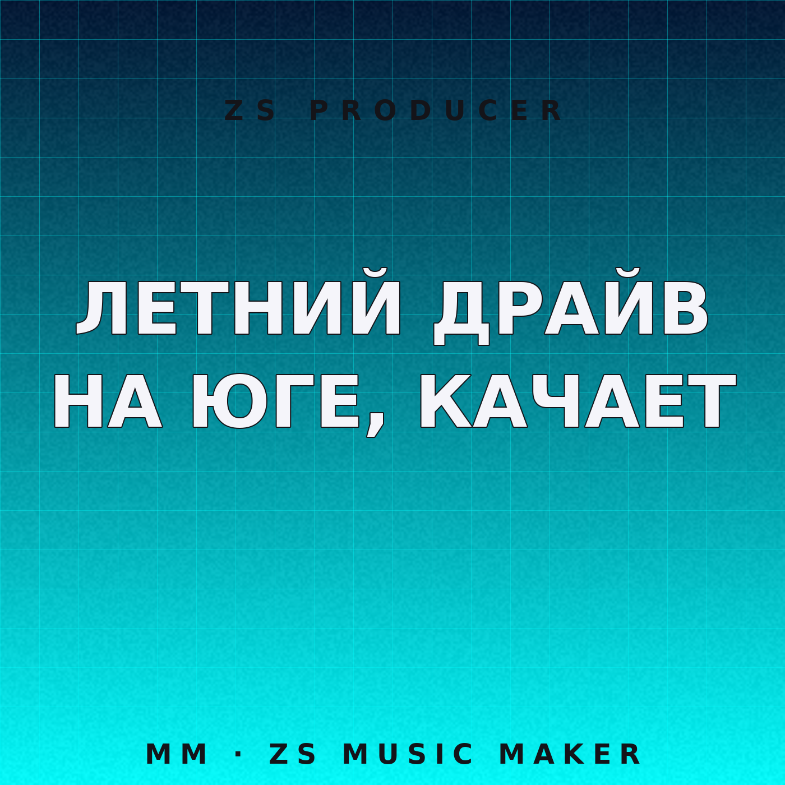

ZS MUSIC MAKER — HIT FACTORY
Идеал: полностью готово • 65% readiness (cap GPU/микрофон) • 2 solid демо 30с — jersey 73.45 и phonk 70.59 • humanize + anti_neuro • 2026-11-14 • main e36598d +
▶ Jersey club — 73.45 solid (лучший)

jersey 136 BPMhook_energy 94drop 100stereo 0.76BPM fitness 100loudness -14.1 LUFS
TikTok 15с (4–29с, яркий ровный участок)
▶ Phonk — 70.59 solid

phonk 152 BPMhook_energy 62.9drop 83.8stereo 0.77low_end 92BPM fitness 80